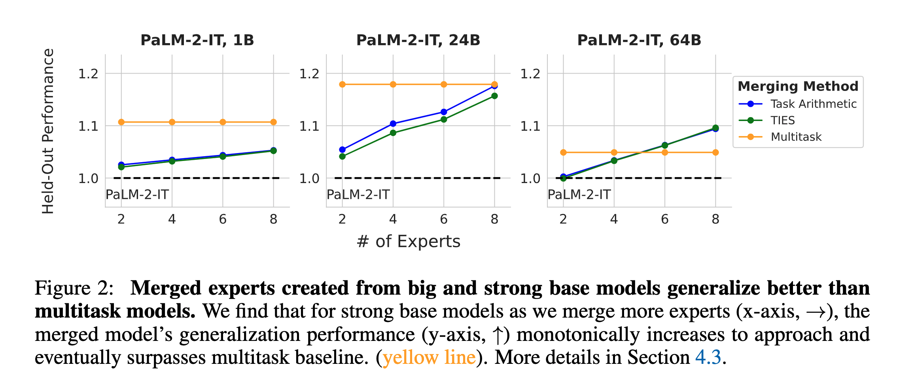
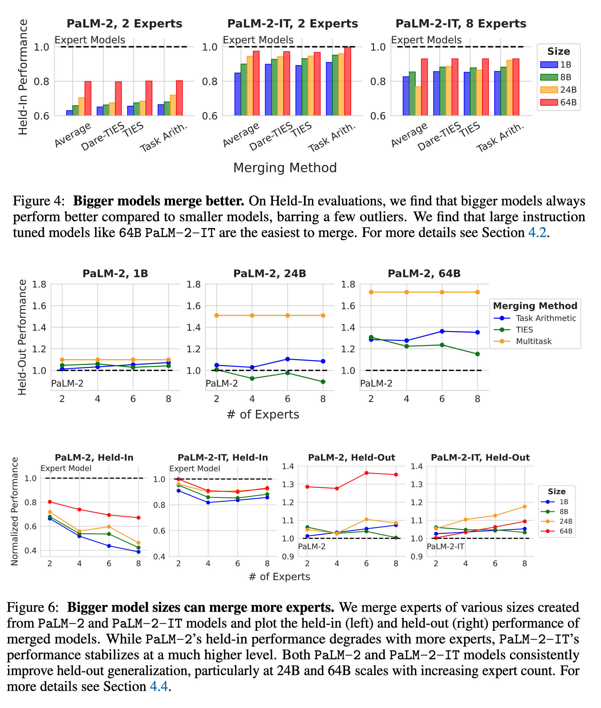
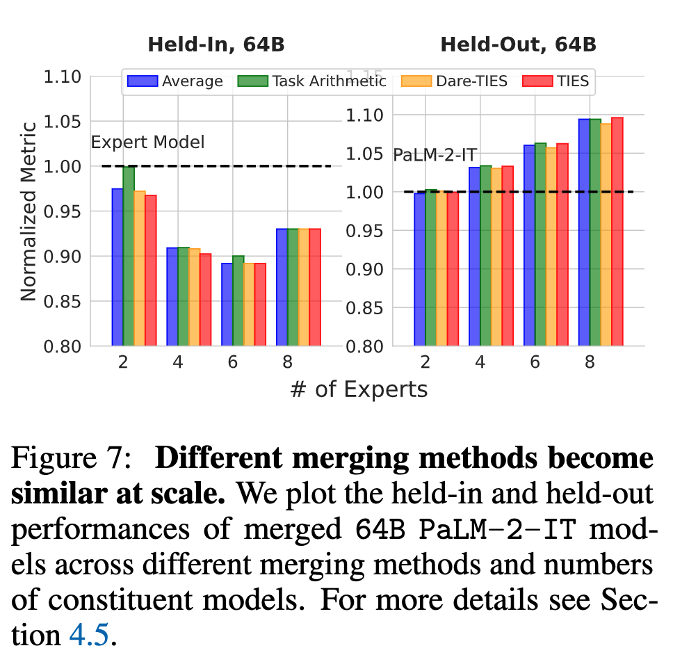
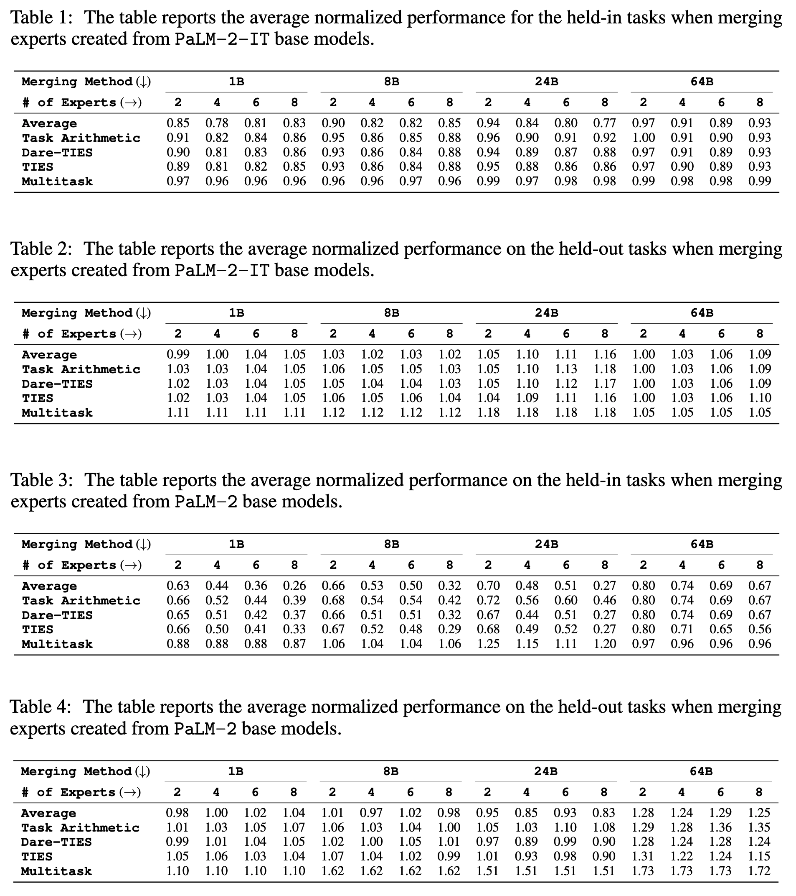

What Matters for Model Merging at Scale?
Yesterday, I read this banger paper titled: What Matters For Model Merging At Scale?. Though I recommend reading the full paper, I am including a summary here in case you are interested in the main points. I will also provide the link to an annotated version of this paper.

Introduction
Model merging is not a new concept. It has been tried and tested enough to create a better or more powerful model by combining two or more (expert) models. Model merging has several advantages:
- Reduced storage and serving costs
- Improved generalization to new tasks due to combined capabilities.
- Decentralized and modular model development.
One potential gap in this area is the lack of a comprehensive study to evaluate its effectiveness as we scale the model size. Most people are either merging models at a small scale (7B-13B models) or merging a limited number of expert models. This paper provides insights into the scalability of model merging.
Problem Statement
- Focuses on model merging with large models
- N expert tasks and a base model
- Expert for each of these N tasks obtained by fully fine-tuning the base model on a specific expert task.
- Four merging methods, including Averaging, Task Arithmetic, TIES, and DARE.
Experimental Design for Large-Scale Evaluation of Model Merging
- Data
- Data settings from the T0 mixture containing 8 held-in and 4 held-out task categories.
- The 8 held-in task categories (with a total of 16 datasets) include Multiple-choice QA, Extractive Qa, Closed-Book QA, Sentiment Analysis, Topic Classification, Structure-to-text, Summarization, and Paraphrase Identification. The 4 held-out task categories are Sentence Completion, Natural Language Inference, Co-reference Resolution, and Word Sense Disambiguation.
- Models
- PaLM-2 with sizes 1B, 8B, 24B, and 64B as the base models. For all these models, the authors also build an instruction-tuned version of PaLM-2-IT.
- For each of the two base model types(non-IT Vs IT) and 4 model sizes, they perform full fine-tuning on the 8 held-in task categories resulting in 64 specialized expert models.
- The authors create a large merging experiment grid with the two base models (PaLM-2 and PaLM-2-IT), four model sizes (1B, 8B, 24B, 64B), four Merging methods (Averaging, Task Arithmetic, Dare-TIES, and TIES), the number of constituent models (2, 4, 6, 8), and 3 seeds to randomly select the constituent tasks for the experiment resulting in a total of 384 merging experiments.
Evaluation
- Performance evaluated on both held-in and held-out tasks
- ∼9000 model evaluations across all the experiments.
Metrics
- For held-in tasks, the merged model performance is normalized against the corresponding task expert model’s performance.
- For held-out tasks, normalization is performed relative to the base model’s performance.
Experimental Results and Insights
- Instruction-Tuned Models Facilitate Easier Merging
- Merging experiments done with fully fine-tuned experts from PaLM-2 and PaLM-2-IT
- Held-in performance is measured over three trials to minimize the impact of selected expert models and their data distributions.
- PaLM-2-IT models consistently outperform PaLM-2 base models for all merging methods. The authors think large-scale instruction tuning further disentangles model weights, facilitating effective model merging and improving the base model zero-shot performance.
- Model Merging Becomes Easier With Bigger Models
- The authors noticed that merged models outperform their corresponding base models in zero-shot generalization to held-out tasks irrespective of the model size, merging method, or number of constituent models.
- For weak base models (PaLM-2), increasing model size significantly improved the merged model performance over the base model. Strong base models (PaLM-2-IT) show a different trend, and the zero-shot generalization improves monotonically with more expert models.
- Bigger Model Sizes Can Merge More Experts
- For weak base models (PaLM-2) that are of small size (1B-8B), merging more models leads to a significant drop in performance, whereas for strong base models (PaLM-2), the drop is negligible.
- The above trend doesn’t hold for bigger model sizes (64B). Merging more experts for a weak base model (PaLM-2 64B) leads to significant improvements in performance, whereas for strong base models(PaLM-2-IT), it leads to better generalization.

- Merging Methods Become Similar at Scale
- At scale, all merging methods for strong base models exhibit very similar performance, suggesting that we can simply use Averaging strategy to get the optimal performance at scale.

- At scale, all merging methods for strong base models exhibit very similar performance, suggesting that we can simply use Averaging strategy to get the optimal performance at scale.
Results
